2024 National 5 Physics - Section 1 questions
Source: Scottish Qualifications Authority (SQA) / Qualifications Scotland. This is a StemInteract HTML companion, not an official HTML edition. Selectable text is supplied alongside original page images. Use the images or original PDF for equations, powers, fractions, vector notation, tables and diagrams; text extraction cannot fully preserve mathematical layout.
Jump to a question
PDF page 1
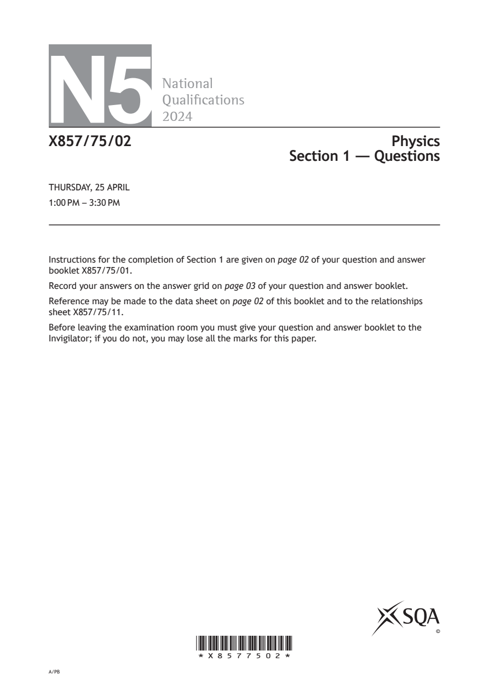
Selectable page text
N5
National
Qualications
2024
X857/75/02 Physics
Section 1 — Questions
THURSDAY, 25 APRIL
1:00 PM – 3:30 PM
Instructions for the completion of Section 1 are given on page 02 of your question and answer
booklet X857/75/01.
Record your answers on the answer grid on page 03 of your question and answer booklet.
Reference may be made to the data sheet on page 02 of this booklet and to the relationships
sheet X857/75/11.
Before leaving the examination room you must give your question and answer booklet to the
Invigilator; if you do not, you may lose all the marks for this paper.
©
*X8577502*
A/PBPDF page 2

Selectable page text
DATA SHEET
Speed of light in materials Speed of sound in materials
Material Speed in m s⁻¹ Material Speed in m s⁻¹
Air 3.0 × 10⁸ Aluminium 5200
Carbon dioxide 3.0 × 10⁸ Air 340
Diamond 1.2 × 10⁸ Bone 4100
Glass 2.0 × 10⁸ Carbon dioxide 270
Glycerol 2.1 × 10⁸ Glycerol 1900
Water 2.3 × 10⁸ Muscle 1600
Steel 5200
Tissue 1500
Gravitational field strengths
Water 1500
Gravitational field strength
on the surface in N kg⁻¹ Specific heat capacity of materials
Earth 9.8
Specific heat capacity
Material
Jupiter 23 in J kg⁻¹ °C⁻¹
Mars 3.7
Alcohol 2350
Mercury 3.7
Aluminium 902
Moon 1.6
Copper 386
Neptune 11
Glass 500
Saturn 9.0
Ice 2100
Sun 270
Iron 480
Uranus 8.7
Lead 128
Venus 8.9
Oil 2130
Water 4180
Specific latent heat of fusion of materials
Melting and boiling points of materials
Specific latent heat
Material
of fusion in J kg⁻¹ Melting point Boiling point
Material
in °C in °C
Alcohol 0.99 × 10⁵
Alcohol −98 65
Aluminium 3.95 × 10⁵
Aluminium 660 2470
Carbon dioxide 1.80 × 10⁵
Copper 1077 2567
Copper 2.05 × 10⁵
Lead 328 1737
Iron 2.67 × 10⁵
Iron 1537 2737
Lead 0.25 × 10⁵
Water – 100
Water 3.34 × 10⁵
Radiation weighting factors
Specific latent heat of vaporisation of materials
Radiation
Type of radiation
weighting factor
Specific latent heat of
Material
vaporisation in J kg⁻¹
alpha 20
Alcohol 11.2 × 10⁵ beta 1
Carbon dioxide 3.77 × 10⁵ fast neutrons 10
Glycerol 8.30 × 10⁵ gamma 1
Turpentine 2.90 × 10⁵ slow neutrons 3
Water 22.6 × 10⁵ X-rays 1
page 02PDF page 3
Section 1, Question 1Section 1, Question 2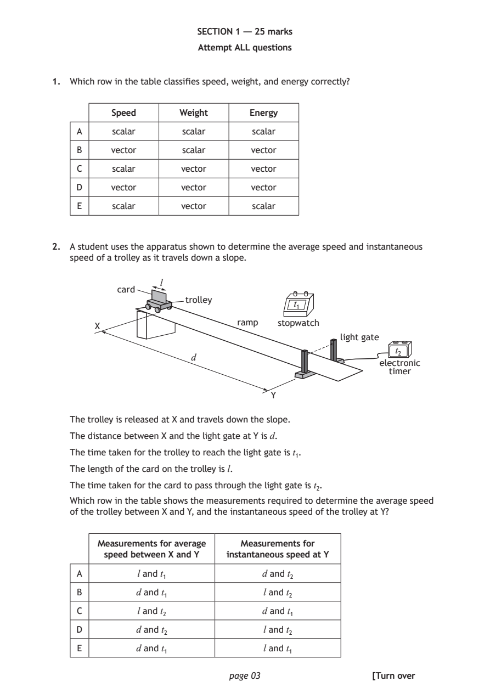
Selectable page text
SECTION 1 — 25 marks
Attempt ALL questions
1. Which row in the table classifies speed, weight, and energy correctly?
Speed Weight Energy
A scalar scalar scalar
B vector scalar vector
C scalar vector vector
D vector vector vector
E scalar vector scalar
2. A student uses the apparatus shown to determine the average speed and instantaneous
speed of a trolley as it travels down a slope.
l
card
trolley
t₁
ramp stopwatch
X
light gate
t₂
d
electronic
timer
Y
The trolley is released at X and travels down the slope.
The distance between X and the light gate at Y is d.
The time taken for the trolley to reach the light gate is t₁.
The length of the card on the trolley is l.
The time taken for the card to pass through the light gate is t₂.
Which row in the table shows the measurements required to determine the average speed
of the trolley between X and Y, and the instantaneous speed of the trolley at Y?
Measurements for average Measurements for
speed between X and Y instantaneous speed at Y
A l and t₁ d and t₂
B d and t₁ l and t₂
C l and t₂ d and t₁
D d and t₂ l and t₂
E d and t₁ l and t₁
page 03 [Turn overPDF page 4
Section 1, Question 3Section 1, Question 4Section 1, Question 5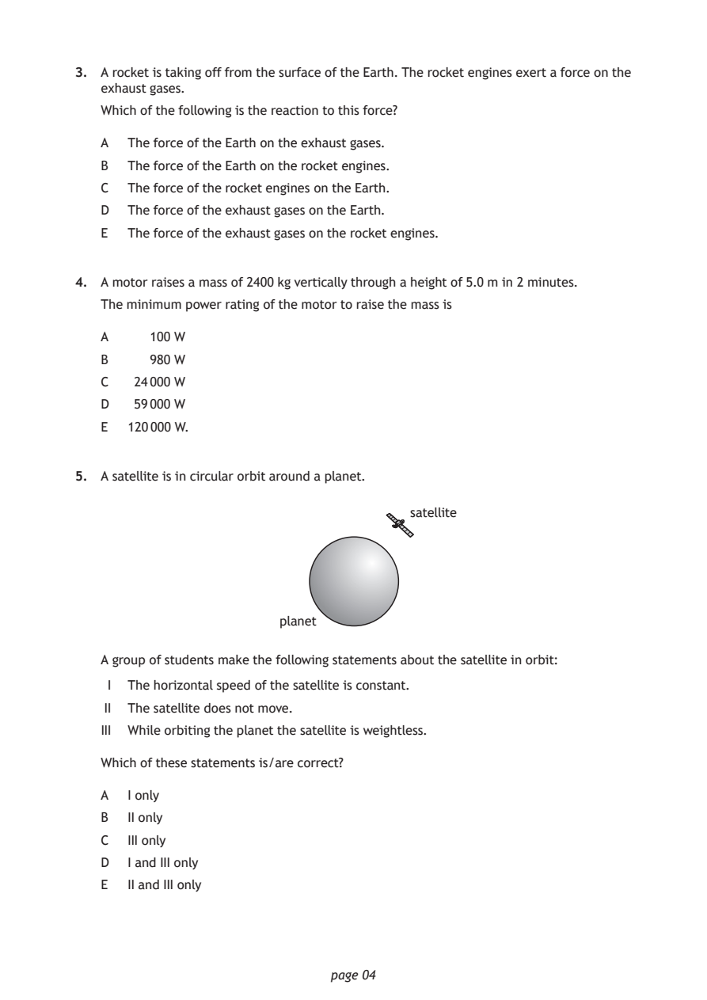
Selectable page text
3. A rocket is taking off from the surface of the Earth. The rocket engines exert a force on the
exhaust gases.
Which of the following is the reaction to this force?
A The force of the Earth on the exhaust gases.
B The force of the Earth on the rocket engines.
C The force of the rocket engines on the Earth.
D The force of the exhaust gases on the Earth.
E The force of the exhaust gases on the rocket engines.
4. A motor raises a mass of 2400 kg vertically through a height of 5.0 m in 2 minutes.
The minimum power rating of the motor to raise the mass is
A 100 W
B 980 W
C 24 000 W
D 59 000 W
E 120 000 W.
5. A satellite is in circular orbit around a planet.
satellite
planet
A group of students make the following statements about the satellite in orbit:
I The horizontal speed of the satellite is constant.
II The satellite does not move.
III While orbiting the planet the satellite is weightless.
Which of these statements is/are correct?
A I only
B II only
C III only
D I and III only
E II and III only
page 04PDF page 5
Section 1, Question 6Section 1, Question 7Section 1, Question 8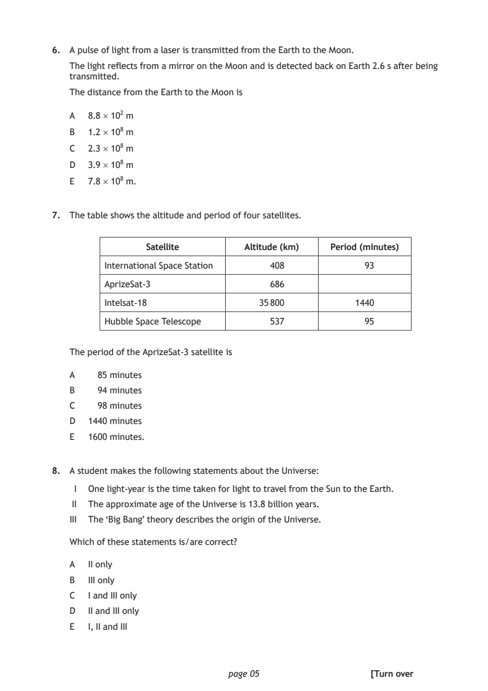
Selectable page text
6. A pulse of light from a laser is transmitted from the Earth to the Moon.
The light reflects from a mirror on the Moon and is detected back on Earth 2.6 s after being
transmitted.
The distance from the Earth to the Moon is
A 8.8 × 10² m
B 1.2 × 10⁸ m
C 2.3 × 10⁸ m
D 3.9 × 10⁸ m
E 7.8 × 10⁸ m.
7. The table shows the altitude and period of four satellites.
Satellite Altitude (km) Period (minutes)
International Space Station 408 93
AprizeSat-3 686
Intelsat-18 35 800 1440
Hubble Space Telescope 537 95
The period of the AprizeSat-3 satellite is
A 85 minutes
B 94 minutes
C 98 minutes
D 1440 minutes
E 1600 minutes.
8. A student makes the following statements about the Universe:
I One light-year is the time taken for light to travel from the Sun to the Earth.
II The approximate age of the Universe is 13.8 billion years.
III The ‘Big Bang’ theory describes the origin of the Universe.
Which of these statements is/are correct?
A II only
B III only
C I and III only
D II and III only
E I, II and III
page 05 [Turn overPDF page 6
Section 1, Question 9Section 1, Question 10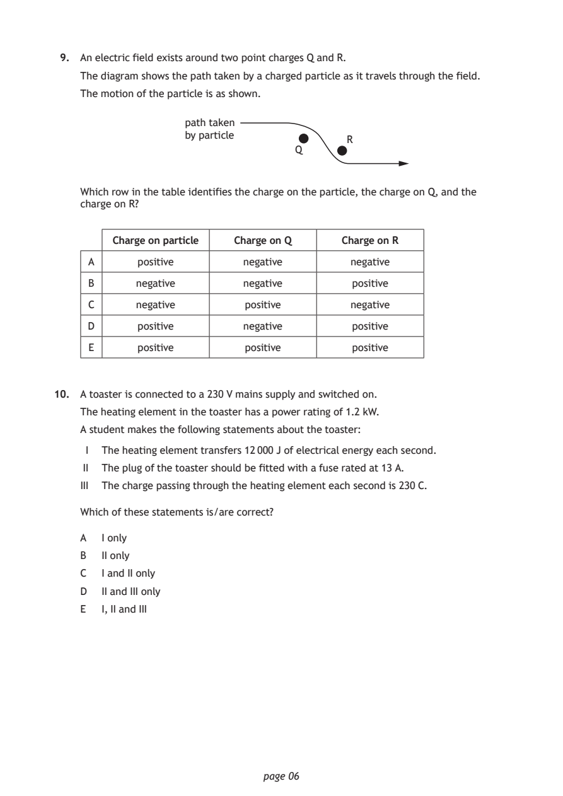
Selectable page text
9. An electric field exists around two point charges Q and R.
The diagram shows the path taken by a charged particle as it travels through the field.
The motion of the particle is as shown.
path taken
by particle
R
Q
Which row in the table identifies the charge on the particle, the charge on Q, and the
charge on R?
Charge on particle Charge on Q Charge on R
A positive negative negative
B negative negative positive
C negative positive negative
D positive negative positive
E positive positive positive
10. A toaster is connected to a 230 V mains supply and switched on.
The heating element in the toaster has a power rating of 1.2 kW.
A student makes the following statements about the toaster:
I The heating element transfers 12 000 J of electrical energy each second.
II The plug of the toaster should be fitted with a fuse rated at 13 A.
III The charge passing through the heating element each second is 230 C.
Which of these statements is/are correct?
A I only
B II only
C I and II only
D II and III only
E I, II and III
page 06PDF page 7
Section 1, Question 11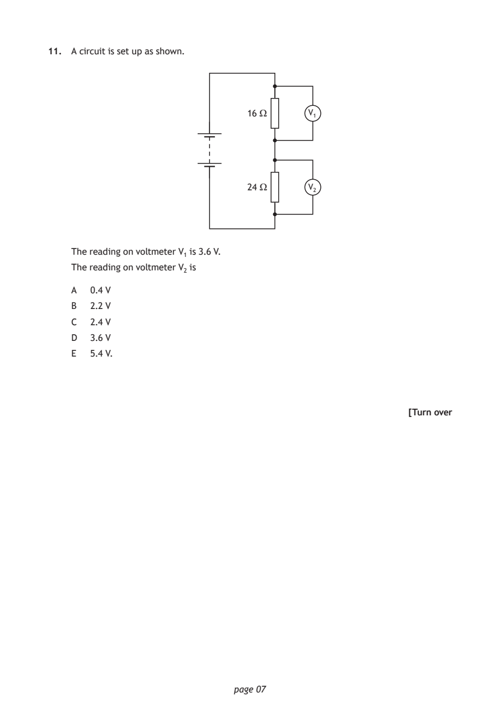
Selectable page text
11. A circuit is set up as shown.
16 Ω V₁
24 Ω V₂
The reading on voltmeter V₁ is 3.6 V.
The reading on voltmeter V₂ is
A 0.4 V
B 2.2 V
C 2.4 V
D 3.6 V
E 5.4 V.
[Turn over
page 07PDF page 8
Section 1, Question 12Section 1, Question 13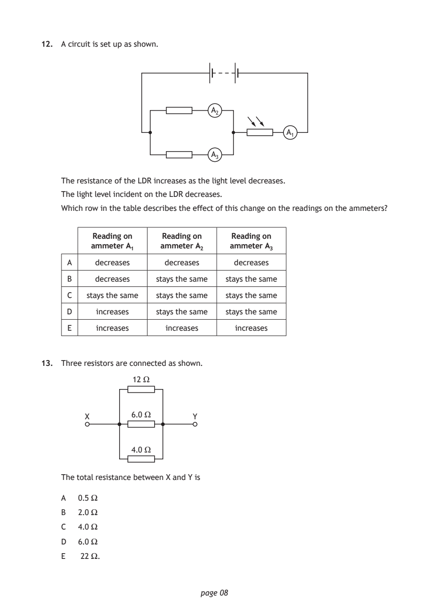
Selectable page text
12. A circuit is set up as shown.
A₂
A₁
A₃
The resistance of the LDR increases as the light level decreases.
The light level incident on the LDR decreases.
Which row in the table describes the effect of this change on the readings on the ammeters?
Reading on Reading on Reading on
ammeter A₁ ammeter A₂ ammeter A₃
A decreases decreases decreases
B decreases stays the same stays the same
C stays the same stays the same stays the same
D increases stays the same stays the same
E increases increases increases
13. Three resistors are connected as shown.
12 Ω
X 6.0 Ω Y
4.0 Ω
The total resistance between X and Y is
A 0.5 Ω
B 2.0 Ω
C 4.0 Ω
D 6.0 Ω
E 22 Ω.
page 08PDF page 9
Section 1, Question 14Section 1, Question 15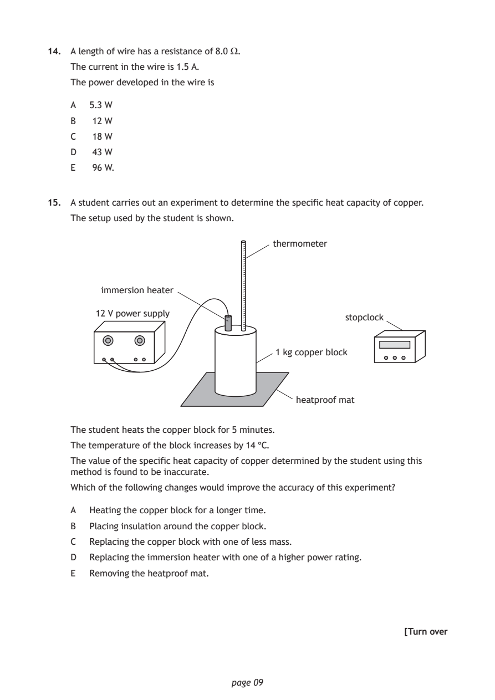
Selectable page text
14. A length of wire has a resistance of 8.0 Ω.
The current in the wire is 1.5 A.
The power developed in the wire is
A 5.3 W
B 12 W
C 18 W
D 43 W
E 96 W.
15. A student carries out an experiment to determine the specific heat capacity of copper.
The setup used by the student is shown.
thermometer
immersion heater
12 V power supply
stopclock
1 kg copper block
heatproof mat
The student heats the copper block for 5 minutes.
The temperature of the block increases by 14 °C.
The value of the specific heat capacity of copper determined by the student using this
method is found to be inaccurate.
Which of the following changes would improve the accuracy of this experiment?
A Heating the copper block for a longer time.
B Placing insulation around the copper block.
C Replacing the copper block with one of less mass.
D Replacing the immersion heater with one of a higher power rating.
E Removing the heatproof mat.
[Turn over
page 09PDF page 10
Section 1, Question 16Section 1, Question 17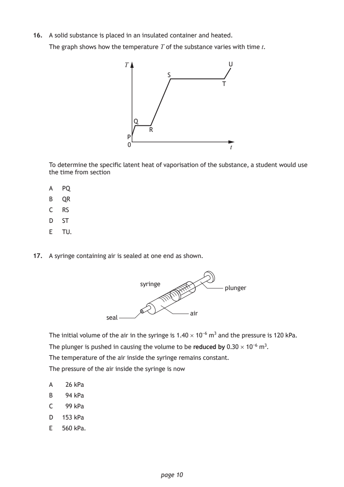
Selectable page text
16. A solid substance is placed in an insulated container and heated.
The graph shows how the temperature T of the substance varies with time t.
T U
S
T
Q
R
P
0
t
To determine the specific latent heat of vaporisation of the substance, a student would use
the time from section
A PQ
B QR
C RS
D ST
E TU.
17. A syringe containing air is sealed at one end as shown.
syringe
plunger
air
seal
The initial volume of the air in the syringe is 1.40 × 10⁻⁶ m³ and the pressure is 120 kPa.
The plunger is pushed in causing the volume to be reduced by 0.30 × 10⁻⁶ m³.
The temperature of the air inside the syringe remains constant.
The pressure of the air inside the syringe is now
A 26 kPa
B 94 kPa
C 99 kPa
D 153 kPa
E 560 kPa.
page 10PDF page 11
Section 1, Question 18Section 1, Question 19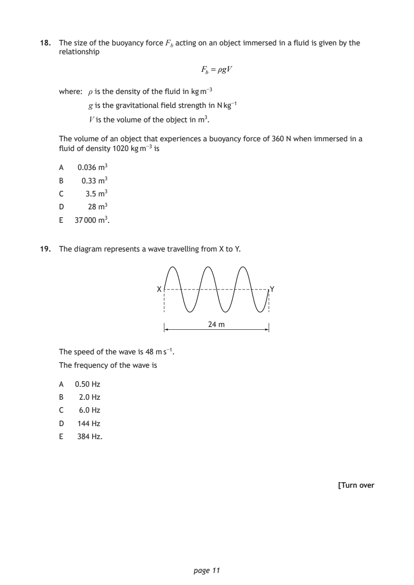
Selectable page text
18. The size of the buoyancy force F_{b} acting on an object immersed in a fluid is given by the
relationship
F_{b} = ρgV
where: ρ is the density of the fluid in kg m⁻³
g is the gravitational field strength in N kg⁻¹
V is the volume of the object in m³.
The volume of an object that experiences a buoyancy force of 360 N when immersed in a
fluid of density 1020 kg m⁻³ is
A 0.036 m³
B 0.33 m³
C 3.5 m³
D 28 m³
E 37 000 m³.
19. The diagram represents a wave travelling from X to Y.
X Y
24 m
The speed of the wave is 48 m s⁻¹.
The frequency of the wave is
A 0.50 Hz
B 2.0 Hz
C 6.0 Hz
D 144 Hz
E 384 Hz.
[Turn over
page 11PDF page 12
Section 1, Question 20Section 1, Question 21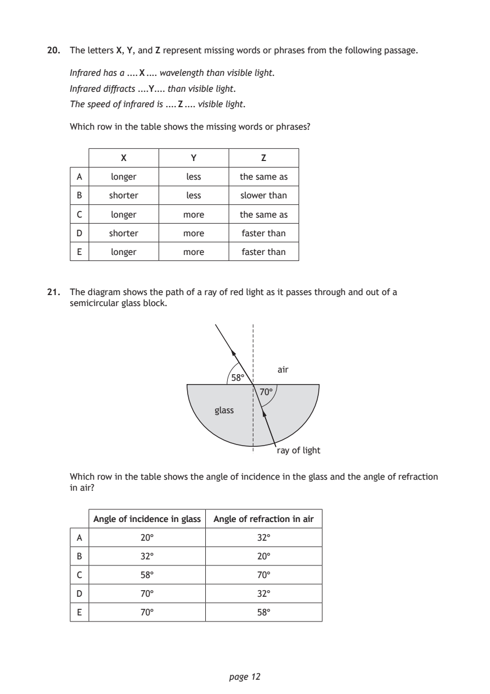
Selectable page text
20. The letters X, Y, and Z represent missing words or phrases from the following passage.
Infrared has a .... X .... wavelength than visible light.
Infrared diffracts ....Y.... than visible light.
The speed of infrared is .... Z .... visible light.
Which row in the table shows the missing words or phrases?
X Y Z
A longer less the same as
B shorter less slower than
C longer more the same as
D shorter more faster than
E longer more faster than
21. The diagram shows the path of a ray of red light as it passes through and out of a
semicircular glass block.
air
58°
70°
glass
ray of light
Which row in the table shows the angle of incidence in the glass and the angle of refraction
in air?
Angle of incidence in glass Angle of refraction in air
A 20° 32°
B 32° 20°
C 58° 70°
D 70° 32°
E 70° 58°
page 12PDF page 13
Section 1, Question 22Section 1, Question 23Section 1, Question 24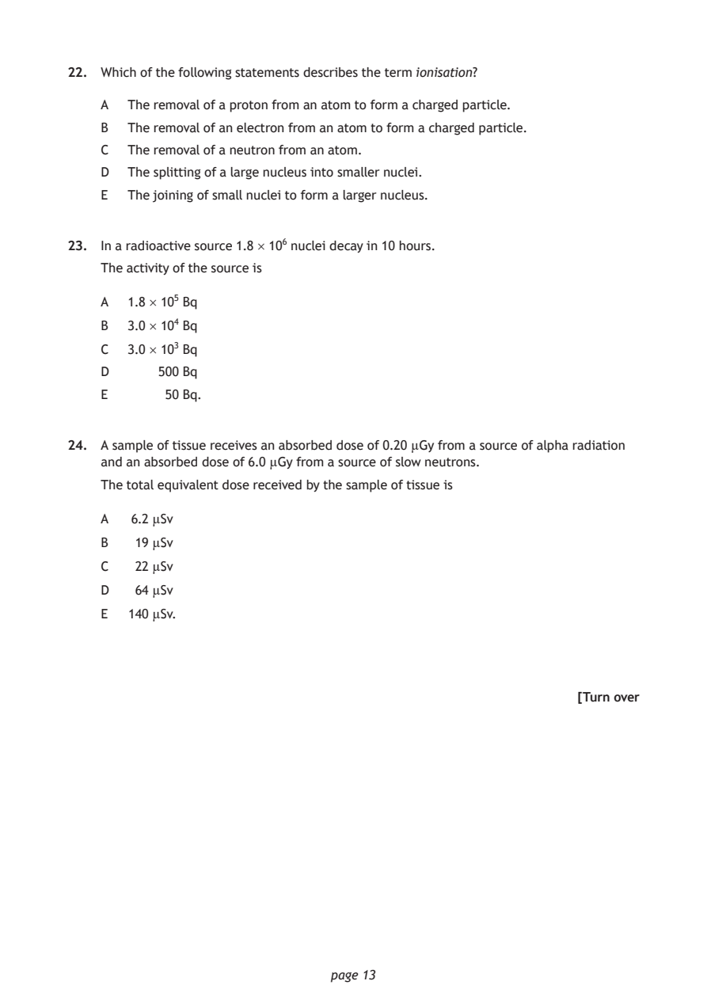
Selectable page text
22. Which of the following statements describes the term ionisation?
A The removal of a proton from an atom to form a charged particle.
B The removal of an electron from an atom to form a charged particle.
C The removal of a neutron from an atom.
D The splitting of a large nucleus into smaller nuclei.
E The joining of small nuclei to form a larger nucleus.
23. In a radioactive source 1.8 × 10⁶ nuclei decay in 10 hours.
The activity of the source is
A 1.8 × 10⁵ Bq
B 3.0 × 10⁴ Bq
C 3.0 × 10³ Bq
D 500 Bq
E 50 Bq.
24. A sample of tissue receives an absorbed dose of 0.20 µGy from a source of alpha radiation
and an absorbed dose of 6.0 µGy from a source of slow neutrons.
The total equivalent dose received by the sample of tissue is
A 6.2 µSv
B 19 µSv
C 22 µSv
D 64 µSv
E 140 µSv.
[Turn over
page 13PDF page 14
Section 1, Question 25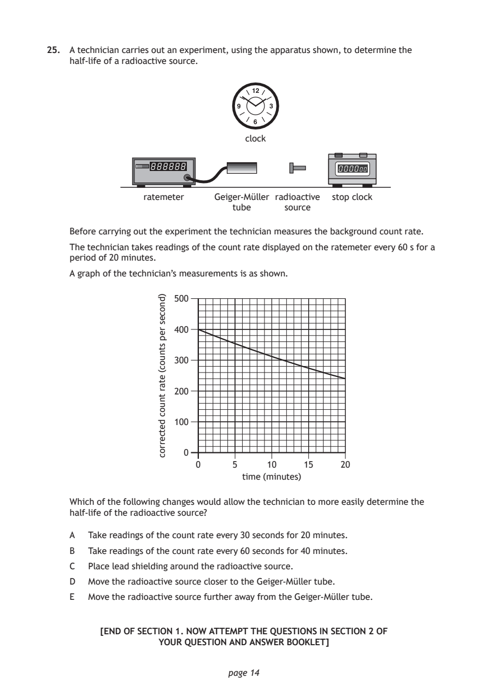
Selectable page text
25. A technician carries out an experiment, using the apparatus shown, to determine the
half-life of a radioactive source.
clock
ratemeter Geiger-Müller radioactive stop clock
tube source
Before carrying out the experiment the technician measures the background count rate.
The technician takes readings of the count rate displayed on the ratemeter every 60 s for a
period of 20 minutes.
A graph of the technician’s measurements is as shown.
500
400
300
200
100
0
0 5 10 15 20
time (minutes)
page 14
)dnoces
rep
stnuoc(
etar
tnuoc
detcerroc
Which of the following changes would allow the technician to more easily determine the
half-life of the radioactive source?
A Take readings of the count rate every 30 seconds for 20 minutes.
B Take readings of the count rate every 60 seconds for 40 minutes.
C Place lead shielding around the radioactive source.
D Move the radioactive source closer to the Geiger-Müller tube.
E Move the radioactive source further away from the Geiger-Müller tube.
[END OF SECTION 1. NOW ATTEMPT THE QUESTIONS IN SECTION 2 OF
YOUR QUESTION AND ANSWER BOOKLET]PDF page 15

Selectable page text
[BLANK PAGE]
DO NOT WRITE ON THIS PAGE
page 15PDF page 16

Selectable page text
[BLANK PAGE]
DO NOT WRITE ON THIS PAGE
page 16